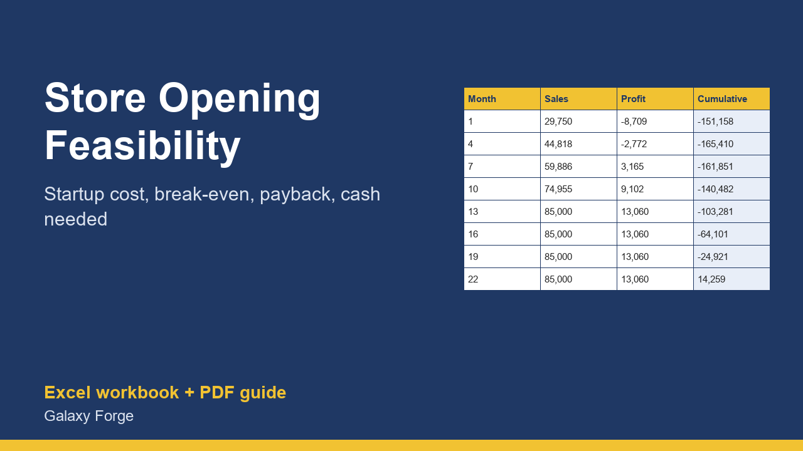

Total up what opening a shop really costs, ramp the sales over 24 months, and see the break-even sales, the first profitable month, the payback month and the cash you must have before you sign the lease.
Most shops do not fail because the idea is bad but because the owner ran out of cash before sales ramped up. This model makes that risk visible before you sign a lease: it totals the startup spend, then walks 24 months of sales, gross profit, variable costs and fixed costs to show when the shop turns profitable and when the investment is paid back.
You enter the build-out, inventory, deposits and other startup costs, the sales you expect when the shop is mature, how long the ramp takes and the percentage of mature sales you will make in month one, plus gross margin, rent, payroll and other costs.
The Summary gives the break-even sales per month, the first profitable month, the payback month, the deepest cash hole and whether the working-capital reserve you planned is enough.
1) On Inputs, replace the example startup costs with quotes and estimates. 2) Enter the mature monthly sales you think the location can reach, the starting percentage in month one and how many months the ramp takes. 3) Enter gross margin, variable costs and every fixed monthly cost including your own draw. 4) Read the Summary, then run the pessimistic version (lower sales, slower ramp) and save both.
Free guide: Retail Store Break-Even: How Much Cash You Need Before the Shop Turns Profitable
Price: $39, one-time. Download: store_opening_feasibility_break_even_model.xlsx (Inputs, Months, Summary) and this guide. Works in Excel 2016 or later, Excel for Mac and Excel on the web; opens in Google Sheets and LibreOffice.
New product, listed 2026-11-05: no sales or reviews yet. Example figures in the workbook are illustrative.
This workbook is a calculation tool, not business, lending, legal or financial advice. Every output depends on the estimates you enter; retail sales ramps are uncertain and most new shops need more cash and more time than planned. Verify your costs with quotes and your lease terms with a lawyer.